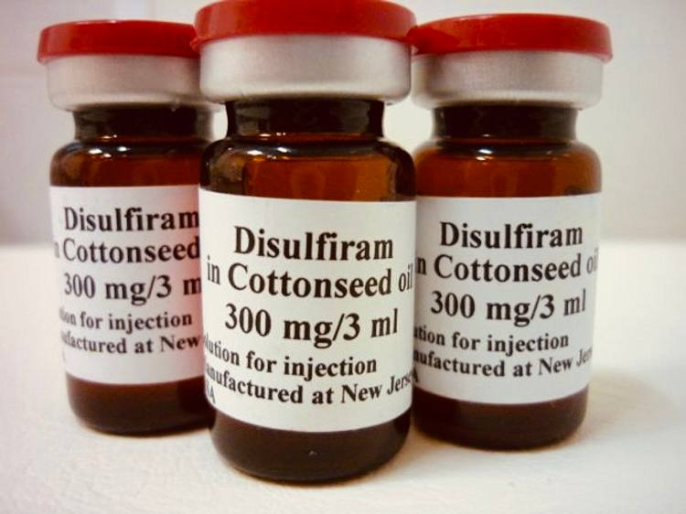

+38(068) 79 72 782
+38(068) 79 72 782Кодування від алкоголізму уколом Дисульфірам
Твереза життя починається тут


Безкоштовна консультація, працюємо цілодобово 24/7
Твереза життя починається тут
Алкогольна залежність (алкоголізм) — це не слабкість характеру, а прогресуюче, хронічне захворювання, що уражає фізичне та психічне здоров’я людини, а також руйнує її соціальне життя. Успішне подолання залежності потребує комплексного, багатоетапного і, головне, ефективного лікування.
Серед методів медикаментозної підтримки одним із найбільш перевірених, надійних і широко застосовуваних у наркологічній практиці є кодування від алкоголізму уколом Дисульфірам.
Терапевтичний ефект Дисульфіраму ґрунтується на його специфічному впливі на обмін етилового спирту (етанолу) в організмі людини. Препарат блокує фермент ацетальдегіддегідрогеназу, який відповідає за розщеплення ацетальдегіду — токсичного продукту розпаду алкоголю.
У результаті цього процесу при вживанні навіть незначних доз алкоголю ацетальдегід не нейтралізується, а швидко накопичується в крові та тканинах, викликаючи важку інтоксикацію.
Підвищення рівня ацетальдегіду провокує гостру токсичну реакцію, відому як дисульфірам-етанолова реакція. Вона проявляється різким падінням артеріального тиску, утрудненням дихання, нудотою, блюванням, припливами жару та болями в серці.
Таким чином, введений препарат формує надійний хімічний бар’єр проти вживання спиртного. Усвідомлення неминучості тяжких наслідків навіть при мінімальній дозі алкоголю створює потужний психологічний стримуючий фактор, який забезпечує тривалий період тверезості та сприяє успішному проходженню подальших етапів психологічної й соціальної реабілітації.
Дисульфірам блокує фермент ацетальдегіддегідрогеназу, відповідальний за переробку алкоголю. У результаті навіть невелика доза спиртного викликає різке накопичення ацетальдегіду — отруйного продукту розпаду етанолу.
Організм реагує на це як на найсильніше отруєння. Перші симптоми з’являються вже через 5–15 хвилин після вживання алкоголю. Навіть ковток напою або продукт із вмістом спирту (квас, сироп, лікерна цукерка) може викликати тяжкий стан.
Симптоми дисульфірам-етанолової реакції. Різке почервоніння обличчя і шиї, відчуття жару, сильна пітливість. Серцебиття до 120–140 ударів за хвилину, падіння тиску, ризик втрати свідомості. Нудота, нестримне блювання, біль у шлунку. Задишка, відчуття задухи, паніка, тривога. Сильний головний біль, запаморочення, тремтіння.
У людей із серцево-судинними захворюваннями або гіпертонією реакція може призвести до: інфаркту міокарда, інсульту, судом, втрати свідомості, коми або навіть летального наслідку.
Саме токсичний ефект формує стійкий бар’єр перед алкоголем. Пацієнт розуміє, що навіть «мала доза» може закінчитися катастрофою — і це допомагає зберегти тверезість упродовж усього строку дії кодування.
Тривалість і надійність медикаментозного кодування від алкоголізму Дисульфірамом безпосередньо залежать від обраної форми введення препарату та його дозування. Наркологія пропонує кілька основних способів доставки препарату в організм, кожен із яких забезпечує різний період тверезості.
1. Ін’єкційні методи (Укол): Від 3 до 12 місяців. Це найпопулярніший і найменш інвазивний метод, який часто проводиться анонімно вдома або в амбулаторних умовах.
2. Імплантаційні методи (Підшивка): Від 1 року до 5 років. Метод «підшивки» забезпечує максимально тривалий термін дії й підходить для пацієнтів із високим ризиком зриву або тривалим стажем залежності.
3. Пероральний прийом (Таблетки): Потребує дисципліни. Незважаючи на наявність таблетованих форм, цей метод рідше використовується в наркології для основного кодування. Застосування: Пацієнт приймає таблетки Дисульфіраму щодня.
Грамотний підбір форми і строку кодування забезпечує максимальну безпеку та ефективність медикаментозного захисту.
Вартість кодування від алкоголізму уколом Дисульфірам починається від 5999 грн.
| Найпопулярніші Послуги | UmbrellaPlus | Ціна |
|---|---|
| Крапельниця від алкоголю | Від 2199 грн |
| Виведення із запою вдома | Від 2199 грн |
| Лікування жіночого алкоголізму | Від 2199 грн |
| Лікування алкоголізму у військових | Від 2199 грн |
| Кодування від алкоголізму уколом Еспераль | Від 7999 грн |
Метод кодування Дисульфірамом має низку суттєвих переваг, що робить його одним із лідерів у наркологічній практиці: Висока надійність: Створює потужний фізіологічний блок, який гарантовано виключає вживання алкоголю на обраний термін. Мотивація: Страх перед реакцією є сильним мотиватором, який допомагає пацієнту залишатися тверезим, поки він працює з психотерапевтом. Тривалість: Забезпечує тривалий період тверезості, необхідний для відновлення психіки, здоров’я та соціальних зв’язків. Анонімність: Процедура може бути проведена анонімно в комфортних домашніх умовах.
Процедура кодування уколом Дисульфірам проходить практично безболісно. Внутрішньом’язовий укол: Якщо препарат вводиться в м’яз (сідничну або плечову), використовуються тонкі голки, і відчуття схоже зі звичайною ін’єкцією. Місце уколу може трохи нити після процедури, але це швидко минає. Підшивка (імплантація): Проводиться з використанням місцевої анестезії. Лікар знеболює невелику ділянку шкіри (зазвичай під лопаткою або в сідничній області), робить крихітний надріз, вводить капсули та накладає шов. Пацієнт не відчуває болю, лише легкий тиск.
Кодування препаратом Дисульфірам — це сучасний, ефективний і безпечний метод лікування алкогольної залежності. Він допомагає надійно закріпити відмову від спиртного й дає людині потужний імпульс до початку нового, тверезого життя. Не відкладайте відновлення на потім. Зателефонуйте за номером +38(050-021-69-57), щоб отримати безкоштовну консультацію та дізнатися більше про анонімне кодування Дисульфірамом у медичній службі UmbrellaPlus.
Александр

Решила сделать укол от алкоголизма по рекомендации подруги, которая проходила эту процедуру в этом же центре. Я сомневалась, но врачи всё объяснили, успокоили. После укола не чувствую тяги к алкоголю, хотя раньше сложно было представить день без выпивки. Сейчас наслаждаюсь трезвостью, чувствую себя намного лучше.
Анонимно
Дуже довго не міг самостійно позбавитися залежності, тому зважився на підшивку. Процедура пройшла успішно, і з того часу я навіть не думаю про спиртне. Страх перед можливими наслідками допомагає триматися на плаву, а підтримка фахівців – величезна підмога у цьому нелегкому шляху. Центр надає як фізичну, а й моральну допомогу. Вдячний їм за другий шанс.
Анонимно
Я никогда не думал, что психологическое воздействие может настолько сильно повлиять на мою жизнь. Врач помог осознать всю серьезность ситуации, и теперь алкоголь не вызывает у меня никакого интереса. Процедура безопасна и эффективна, рекомендую тем, кто хочет по-настоящему изменить свою жизнь.
Анонимно
Я прошла кодирование гипнозом, и это было удивительное переживание. Во время сеанса я почувствовала глубокое расслабление, а потом – будто внутри что-то изменилось. Сейчас я свободна от алкоголя и наслаждаюсь этим состоянием. Благодарю центр за профессионализм и заботу! Отдельная благодарность Станиславу Вячеславовичу
Анонимно
Чесно кажучи, боявся рецидиву, але з процедури минуло півроку, і я навіть не думаю про випивку. Життя почало змінюватися на краще. Дякуємо лікарям за підтримку та мотивацію!
Анонимно
Після багаторічної боротьби із залежністю вирішила звернутись в клінку. Спочатку переживала, але лікарі дуже докладно розповіли про процес та можливі наслідки. Зараз я не п’ю вже 8 місяців і почуваюся чудово. Я така щаслива, що знайшла цей центр і знайшла контроль над своїм життям.
Анонимно
Метод Долженко казался мне странным, но я решил попробовать. Оказалось, что это не просто кодировка, а глубокая работа с психикой. Это позволило мне кардинально изменить отношение к алкоголю. Уже год я не пью, и не планирую возвращаться к прежней жизни. Простое человеческое спасибо!
Анонимно
Гипноз помог мне избавиться от постоянной тяги к алкоголю. После сеансов я заметила, что стала спокойнее и увереннее в себе. Теперь алкоголь меня больше не интересует. Центр мне очень помог, и я благодарна за их заботу и поддержку.
Номер телефону:
+380 (68) 797 27 82
+380 (50) 021 69 57
Адресу наркологічного центра вашого міста
уточнюйте за телефоном
Працюємо: Київ, Одеса, Львів, Харків, Дніпро,
Запоріжжя
Telegram: t.me/umbrellaplus
Графік работы: Цілодобово